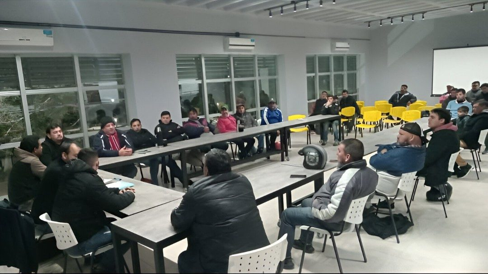

Capacitación
Actualización permanente en materiales, herramientas, instalaciones y normativas del rubro sanitario.
Oficio sanitario • Corrientes
Fortalecemos el trabajo de plomeros, sanitaristas, estudiantes e instituciones con capacitación técnica, acompañamiento y compromiso comunitario.



Qué impulsamos
Actualización permanente en materiales, herramientas, instalaciones y normativas del rubro sanitario.
Trabajo en red con escuelas, instituciones y profesionales para fortalecer el oficio desde lo colectivo.
Acompañamos a estudiantes y trabajadores con propuestas concretas para mejorar sus oportunidades laborales.
Asociación de Plomeros y Sanitaristas
El trabajo sanitario está presente en cada hogar, escuela, comercio e institución. Por eso promovemos formación práctica, responsabilidad profesional y una red de trabajadores mejor preparada.
Capacitaciones para estudiantes y trabajadores del sector sanitario.
Herramientas, materiales, criterios técnicos y normas de seguridad.
Espacios de encuentro para que el oficio gane oportunidades reales.